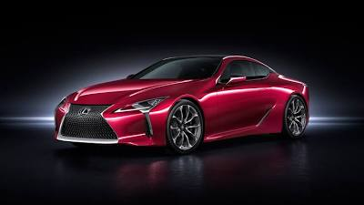
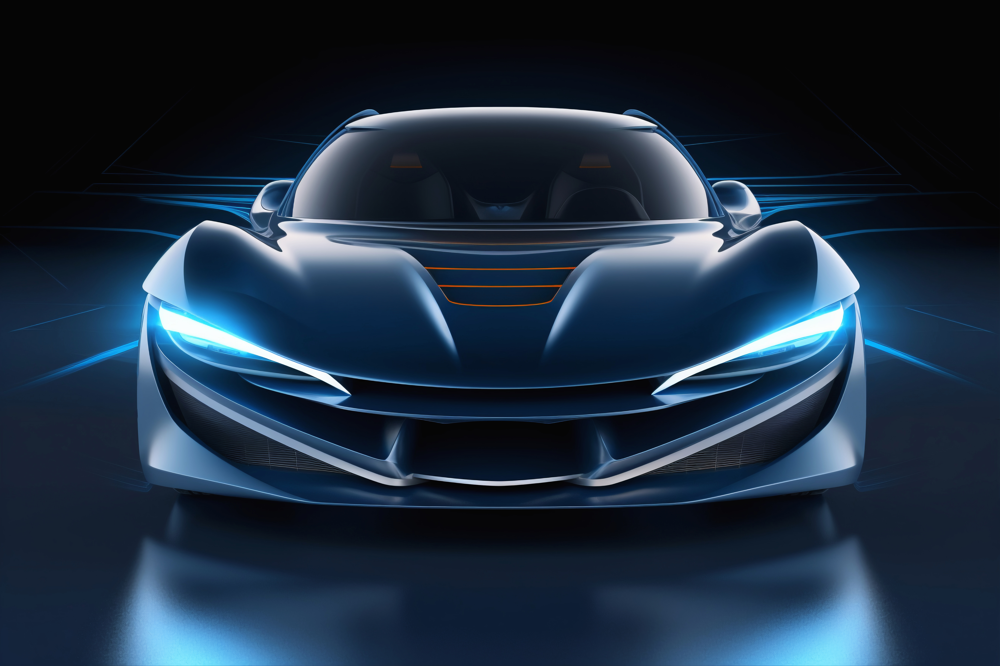
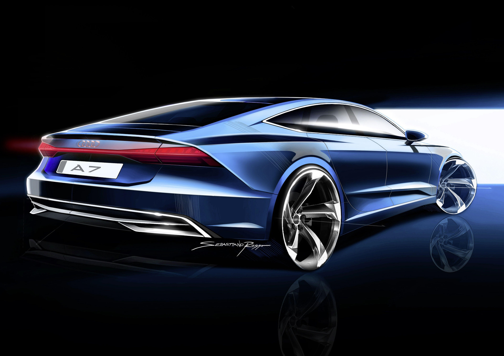
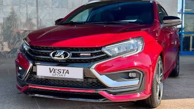

Автосервис иномарки и отчечественные авто
Профессиональный ремонт и обслуживание иномарок и отечественных автомобилей.




Виды работ и цены
| Вид работ | Описание | Цена (руб.) |
|---|---|---|
| Диагностика двигателя | Компьютерная диагностика двигателя BMW/Audi | 1500 |
| Замена масла | С заменой фильтра и расходников | 1200 |
| Замена тормозных колодок | Передние или задние (пара) | 1500 |
| Замена свечей зажигания | Бензиновые двигатели BMW/Audi | 1200 |
| Ремонт подвески | Замена сайлент‑блоков, амортизаторов | от 1500 |
| Ремонт коробки передач | Компьютерная диагностика и ремонт | от 1600 |
| Кузовной ремонт | Восстановление геometrии, покраска | расчёт индивидуально |
| Ремонт кондиционера | Диагностика и заправка | 3000 |
| Точная стоимость определяется после диагностики автомобиля. | ||